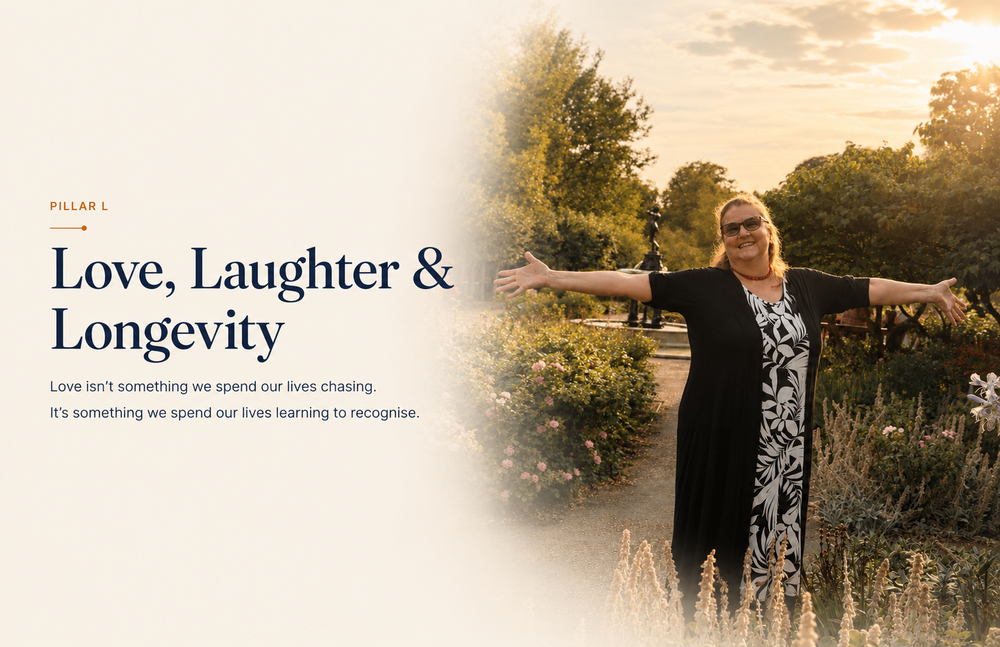

Love, Laughter & Longevity
Pillar L. Love isn’t something we spend our lives chasing. It’s something we spend our lives learning to recognise.
We spend so much of life chasing the next thing.
The next relationship.
The next achievement.
The next promotion.
But the happiest people aren’t chasing.
They’re tending.
They look after what matters.
Little by little, their whole garden grows.
A Core Teaching Concept
The Heart Garden™
You don’t chase love. You cultivate it.
When you nurture yourself, your whole garden thrives.
Self Love
The roots of everything.
When I love myself, my whole garden grows.
Water Yourself First
Water yourself first.
Learning to Recognise Love
Love isn’t something we spend our lives chasing.
Often it’s something we spend our lives learning to recognise.
Tools & Practices
Ways to Tend Your Heart Garden
Family
Family
Roots of love.
Where we begin.
Friends
Friends
The flowers that brighten every day.
Community
Community
We rise together.
We support, we care, we belong.
Purpose
Purpose
The reason I get up each day.
Pets
Pets
Unconditional love.
Pure joy.
Tiny Moments
Tiny Moments
Sandwiches. Coffees. Hugs.
Small things. Big love.
Giving
Love grows when we give freely.
Receiving
It’s okay to receive love and support.
Play
Play
Don’t stop playing just because you grew up.
Laughter
Laughter
Find the funny.
It changes everything.
Health
Move. Nourish. Rest. Laugh.
Take care of this body.
One Tiny Choice
Choose love.
Find the funny.
Play more.
Be kind.
Keep connecting.
Live well.
A wonderful life doesn’t happen by accident.
It happens one tiny choice at a time.
A question to sit with
What is one tiny choice you could make today to nurture your own Heart Garden?
Want to go deeper into Love, Laughter & Longevity?
Explore Love, Laughter & Longevity in the Visual Learning Library →
Continue exploring The L.A.U.G.H.T.E.R. Method®